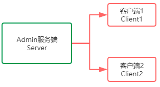
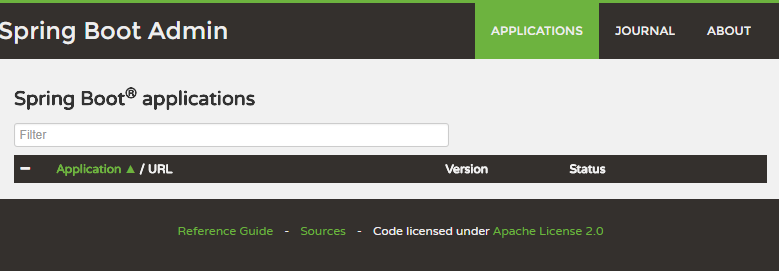
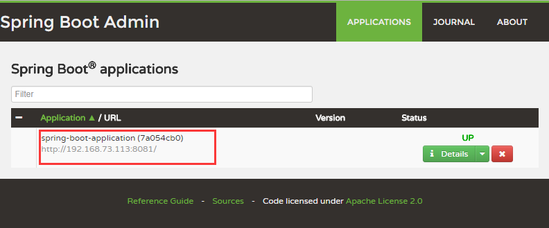
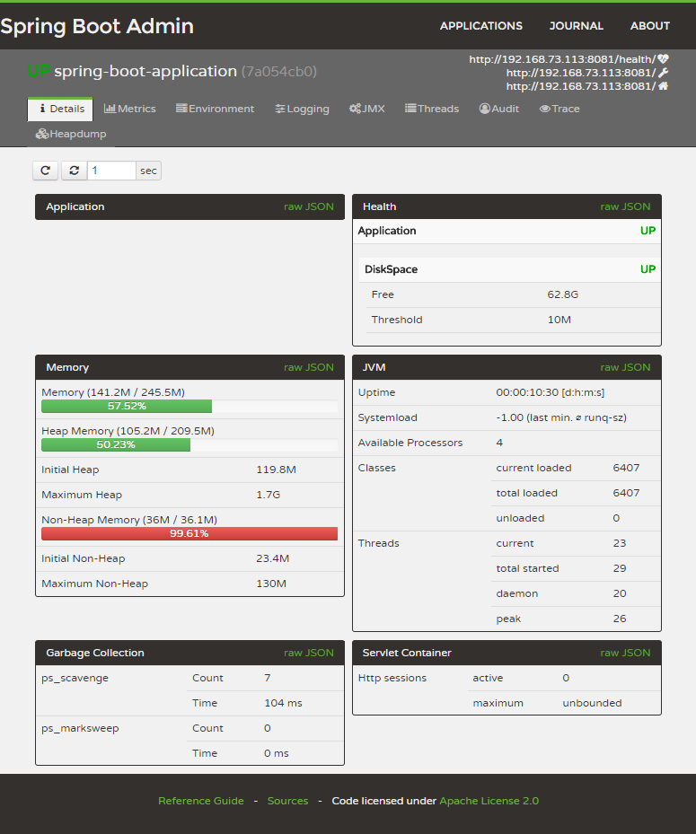
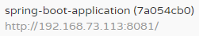
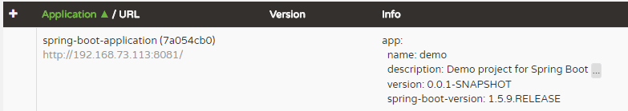
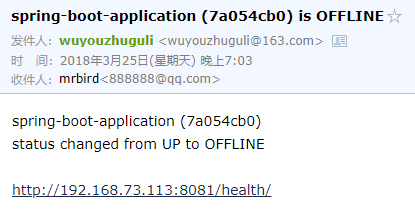

在使用Actuator监控Spring Boot应用一节中我们介绍了使用Actuator来监控Spring Boot应用，其提供了许多REST接口来查看应用的信息。但其返回的是大量的JSON格式数据，信息看上去不直观也不易于理解。而Spring Boot Admin（SBA）是一款基于Actuator开发的开源软件：https://github.com/codecentric/spring-boot-admin，以图形化界面的方式展示Spring Boot应用的配置信息、Beans信息、环境属性、线程信息、JVM状况等。本文使用的Spring Boot Admin版本为1.5.7，有能力的朋友可以直接阅读官方文档：http://codecentric.github.io/spring-boot-admin/1.5.7。
搭建SBA服务端
搭建一个SBA服务端（Server），其他被监控的Spring Boot应用作为客户端（Client），客户端通过HTTP的方式将自己注册到服务端，以供服务端进行监控服务。大致关系如下图所示：

引入SBA Server依赖
使用http://start.spring.io/开启一个简单的Spring Boot项目，然后引入spring-boot-admin-server相关依赖：
|
|
开启Admin监控
在Spring Boot入口类中加入@EnableAutoConfiguration，@EnableAdminServer注解开启监控功能：
|
|
然后在yml中对项目进行简单的配置：
|
|
启动项目，访问http://localhost:8080/admin-server：

因为还没添加客户端，所以监控列表里是空的，接下来创建一个Spring Boot应用作为客户端。
SBA客户端
引入SBA Client依赖
同样的，使用http://start.spring.io/搭建一个简单的Spring Boot项目作为SBA客户端，然后引入Client依赖：
|
|
yml配置：
|
|
spring.boot.admin.url配置的是SBA服务端的地址，management.security.enabled: false这里先关闭安全验证。启动客户端后查看http://localhost:8080/admin-server地址：

可看到SBA客户端已经被注册到SBA服务端了，接下来便可以在SBA服务端页面上查看各种SBA客户端信息：

客户端额外信息
默认客户端在服务端监控列表呈现的信息并不多：

我们可以在SBA客户端yml里配置更为详细的信息：
|
|
然后便可以在SBA服务端看到较为详细的客户端信息： 
添加邮件预警
SBA服务端也可以配置邮件预警服务，默认情况下对于被检测的应用启动或者停止的时候会触发预警。
首先添加邮件依赖：
|
|
然后在SBA服务端的yml中配置邮件预警：
|
|
邮件的具体使用方法可参考https://mrbird.cc/Spring-Boot-Email.html。
当被检测的应用关停的时候，收到如下邮件：

附录
SBA Server配置说明
| Property name | Description | Default value | 中文说明 |
|---|---|---|---|
| spring.boot.admin.context-path | The context-path prefixes the path where the Admin Server’s statics assets and API should be served. Relative to the Dispatcher-Servlet. | Admin Server 保留的静态访问和API的前缀（当你在业务应用中使用而不是单独使用时就很有必要了） | |
| spring.boot.admin.monitor.period | Time interval in ms to update the status of applications with expired status-informations. | 10.000 | 更新应用信息的频率，单位毫秒 |
| spring.boot.admin.monitor.status-lifetime | Lifetime of application statuses in ms. The applications /health-endpoint will not be queried until the lifetime has expired. | 10.000 | 被监控的应用信息的过期时间，单位毫秒 |
SBA Client配置说明
| Property name | Description | Default value | 中文说明 |
|---|---|---|---|
| spring.boot.admin.client.enabled | Enables the Spring Boot Admin Client. | true | 默认开启 |
| spring.boot.admin.url | List of URLs of the Spring Boot Admin server to register at. This triggers the AutoConfiguration. Mandatory. | admin server 的地址列表，此设置会触发自动配置，必须 | |
| spring.boot.admin.api-path | Http-path of registration endpoint at your admin server. | “api/applications” | 注册到 admin server 端点的 Http-path |
| spring.boot.admin.username spring.boot.admin.password | Username and password for http-basic authentication. If set the registration uses http-basic-authentication when registering at the admin server. | 注册到 admin server 的账号密码 | |
| spring.boot.admin.period | Interval for repeating the registration (in ms). | 10.000 | 重试注册的间隔时间 |
| spring.boot.admin.auto-registration | If set to true the periodic task to register the application is automatically scheduled after the application is ready. | true | 应用启动后自动执行周期性的注册任务 |
| spring.boot.admin.auto-deregistration | Switch to enable auto-deregistration at Spring Boot Admin server when context is closed. | false | 当应用关闭时，自动取消注册 |
| spring.boot.admin.client.health-url | Client-health-url to register with. Can be overridden in case the reachable URL is different (e.g. Docker). Must be unique in registry. | Guessed based on management-url and endpoints.health.id. | |
| spring.boot.admin.client.management-url | Client-management-url to register with. Can be overridden in case the reachable url is different (e.g. Docker). | Guessed based on service-url, server.servlet-path, management.port and management.context-path. | |
| spring.boot.admin.client.service-url | Client-service-url to register with. Can be overridden in case the reachable url is different (e.g. Docker). | Guessed based on hostname, server.port and server.context-path. | |
| spring.boot.admin.client.name | Name to register with. | ${spring.application.name} if set, “spring-boot-application” otherwise. | 注册时的名字 |
| spring.boot.admin.client.prefer-ip | Use the ip-address rather then the hostname in the guessed urls. If server.address / management.address is set, it get used. Otherwise the IP address returned from InetAddress.getLocalHost() gets used. | false |
邮件配置选项
| Property name | Description | Default value | 中文说明 |
|---|---|---|---|
| spring.boot.admin.notify.mail.enabled | Enable mail notifications | true | 默认启用 |
| spring.boot.admin.notify.mail.ignore-changes | Comma-delimited list of status changes to be ignored. Format: “:”. Wildcards allowed. | “UNKNOWN:UP” | 需要忽略的状态改变通知，逗号分隔 |
| spring.boot.admin.notify.mail.to | Comma-delimited list of mail recipients | “root@localhost” | 接收通知的邮箱地址，逗号分隔 |
| spring.boot.admin.notify.mail.cc | Comma-delimited list of carbon-copy recipients | 抄送 | |
| spring.boot.admin.notify.mail.from | Mail sender | 发送人 | |
| spring.boot.admin.notify.mail.subject | Mail subject. SpEL-expressions are supported | “#{application.name} (#{application.id}) is #{to.status}” | 主题 |
| spring.boot.admin.notify.mail.text | Mail body. SpEL-expressions are supported | “#{application.name} (#{application.id})\nstatus changed from #{from.status} to #{to.status}\n\n#{application.healthUrl}” | 内容 |
参考博文：https://blog.csdn.net/kinginblue/article/details/52132113#t26
源码链接：https://github.com/wuyouzhuguli/Spring-Boot-Demos/tree/master/23.Spring-Boot-Admin。